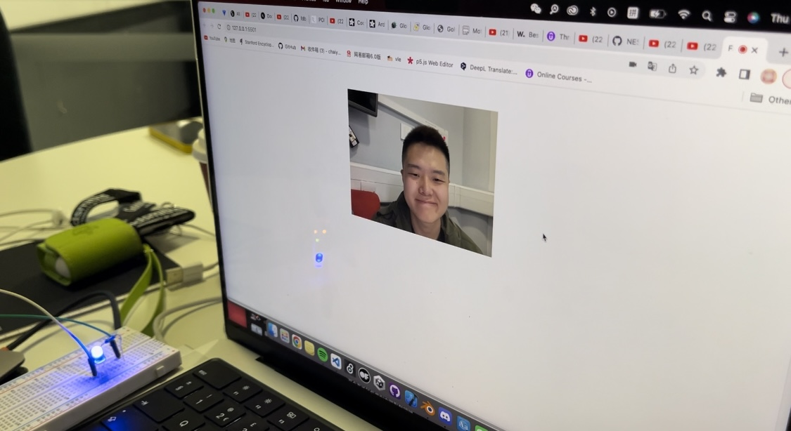

Introduction
This is a project where the camera captures the audience's expressions and then controls the device. The computer will control the movement of the conveyor belt or stop it according to the audience's expressions in front of the camera, until the needle on the conveyor belt almost bursts the balloon.
Concept and Background Research
In this work, "whether the balloon will burst" will become a hint and curiosity in the audience's mind, and to achieve this goal, you must keep smiling and not reveal your tension. Until the device reaches its tipping point, the moment the needle is about to pierce the balloon, everything is fine and no one is shocked, neither the balloon nor the needle nor the audience. But, as it often happens, people start to get nervous when you realize that the balance could be tipped the next second, that everything could crumble the next second. Just like a series of social and environmental changes, people as a group have the ability to control the development of things, but after seemingly calm and risk-free, they don't care too much, but when they have a premonition that huge changes are coming, Suddenly started to panic.
I was inspired by the artist Mauricio Alejo, whose photographs show an atmosphere of tension and breath-holding, because the objects and elements in his images have a danger that I call a 'tipping point', so I thought my work could have a similar atmosphere.


Technical Implementation
I first tested the accuracy of facial expression recognition, and the second step is to add LED bulbs to test and check the communication with Arduino
I first tested the accuracy of facial expression recognition, and the second step is to add LED bulbs to test and check the communication with Arduino
In my project, the code in p5js plays the role of calculating and transmitting information, not as any visual element in the work, and it is invisible to the audience during the exhibition. This code calculates the expression of the audience in front of the camera and returns three values "happy", "neutral" and "sad". At this time, once "Happy" appears, the conveyor belt will move forward, towards the balloon. Send a "forward" or "stop" signal to the motor through Arduino. At this time, the motor driver will drive the stepper motor, and the needle fixed on the slide rail will move towards the balloon. In terms of expression recognition, I used the face-api and pre-trained models, which can quickly and accurately capture the changes in the audience's expressions, and then send signals to Arduino. Arduino receives the set characters and satisfies the if condition , the action will be triggered.
Reflection and Future Development
In terms of detecting the facial expression of the audience, the code performs well with a single person and is relatively stable, but if the background keeps moving, or if more than one people appear in the frame, the data becomes unstable. Also, it would be better if it ended with "the balloon will eventually be punctured", but this would create a problem in the exhibition, as new balloons would need to be replenished in time, and I have not yet created a part of the installation that would automatically fill up and replace a new balloon, so if I have the chance to improve it in the future, I would like the installation to be able to have an air pump at the bottom of the balloon when it breaks. When a balloon breaks, the air pump at the bottom can blow out a new one.